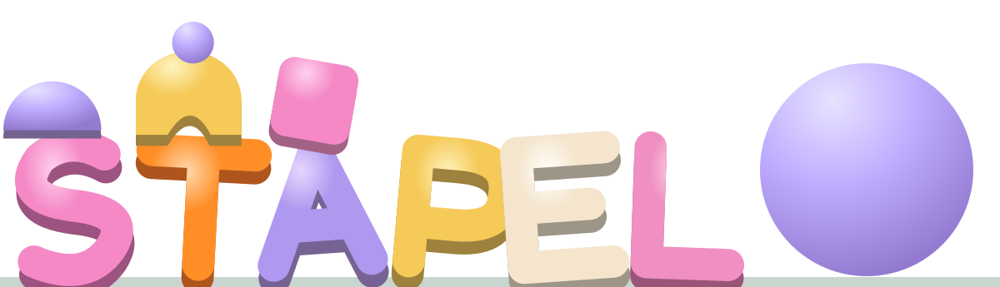

فیلم توضیحی
داستان کوتاهی از محصول، از طراحی شخصیت تا صدا.
استودیو اشتاپل برای تصویرسازی و انیمیشن. فیلم کوتاه، لوگوی متحرک و دنیاهایی از فرمهای نرم میسازیم.

داستان کوتاهی از محصول، از طراحی شخصیت تا صدا.
حرکتی کوتاه برای آغاز و پایان ویدئوها.
زبان تصویری مشترک برای پوستر و رسانههای دیجیتال.
حرکتهای تکرارشونده برای شبکه و وب.

موضوع، زمان تقریبی فیلم و محل انتشار را مشخص کن.
ابعاد و فرمت خروجی با رسانهٔ انتخابی هماهنگ میشود.
در فایل پروژه از حالوهوای کار، مدت و رسانهٔ نمایش بگو.
 انتخاب این قالب
انتخاب این قالب